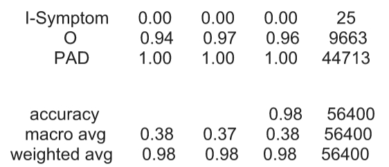
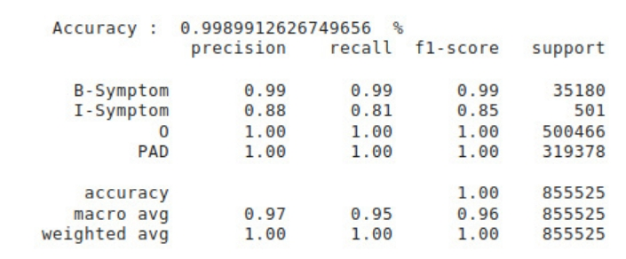
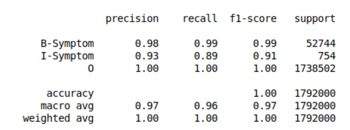

Medical Entity Recognition is a crucial step towards efficient medical texts analysis. For this project, the medical entities which might be one single term or a sequence of terms should be one of the following categories - Disease, Symptoms, Drugs, Test, Treatment. Social media sites, such as Twitter, can be a rich source of many kinds of information, including health-related information. Accurate detection of entities such as diseases, drugs, and symptoms could be used for biosurveillance (e.g. monitoring of flu) and identification of adverse drug events. This task becomes difficult on tweets as they are known to be full of slang and doesn't guarantee enough context for information extraction.
Traditional MERs are used on formal medical texts, such as published medical studies, research articles, clinical reports, discharge summaries and Electronic Health Records. In this project, we will evaluate the performance of various existing MERs on Twitter data and try to improve its performance on tweets.
Named Entity Recognition can automatically scan entire articles and reveal which are the major people, organizations, and places discussed in them. Knowing the relevant tags for each article help in automatically categorizing the articles in defined hierarchies and enable smooth content discovery. Medical Entity Recognition (MER) aims to identify and classify the portions of text which span medical entity mentions. The entity types are fixed and known in advance. In this project the entity types to be recognized are Drug, Disease, Symptom, Treatment and Test. Traditional MERs are used on formal medical texts, such as published medical studies, research articles, clinical reports, discharge summaries and Electronic Health Records. In this project, we will evaluate the performance of various existing MERs on Twitter data and try to improve its performance on tweets.
CSIRO Adverse Drug Event Corpus (Cadec) is a rich annotated corpus of medical forum posts on patient reported Adverse Drug Events (ADEs). This corpus is useful for those studies in the area of information extraction, or more generically text mining, from social media to detect possible adverse drug reactions from direct patient reports. This dataset has 1250 files of text and its annotations.
This dataset aims to provide a comparable corpus of texts from PubMed and Twitter that can be used to study drug reports from these two sources of information, allowing researchers in the area of pharmacovigilance using natural language processing (NLP) to perform experiments to better understand the similarities and differences between drug reports in Twitter and PubMed. This dataset contains 521 tweets.
This dataset consists of tweet annotations with medical entities. We focuses on three types of entities: Disease (T047 in UMLS), Symptoms (T184), and Pharmacologic Substance (T121).
Downloaded Twitter dump of first 10 days of November from here in json format. The size of dump was more than 100 GB. We had filtered out 121MB from 180 GB of data, which has 4,42,203 samples.
In CADEC dataset, data is in the form of 'brat-flavored standoff' with a .txt and a .ann extension files which should be converted to usabel CSV format. We created a script which reduces the 'brat-flavored standoff' to a text format and labelling every word from .ann file. This text file is then converted to a CSV.
This dataset also follows 'brat-flavored standoff' format that contains tweet ids of the tweets. To convert the dataset into a CSV format, we created a script similar to one above.
This dataset is of .linejson format, with tweet IDs as keys, and ‘type’ contains type of annotation that a word belongs to, and an attribute of json type named ‘location’ has two keys ‘start’ and ‘end’, which tells us where in the text that word is starting and where it is ending. The data has lot of discrepancies where pointer are very different from the actual occurences of the words. This had to be rectified manually, file by file basis. This resulted in addition of 370 tweets to the dataset as many of the tweets were either deleted or were from the accounts which got deactivated. Since we had a script to get CSV from 'brat-flavored standoff', we converted the data into the required format to use the script.
We discarded all the tweets that were not of medical domain. After filtering all the data we removed emojis, links, mentions and retweets from tweets, just to make data more clear, and then we annotated them to create a CSV so that, it will be ready to use by models. We had filtered out 121MB from 180 GB of data, which has 4,42,203 samples.
A bidirectional LSTM is a combination of two LSTMs — one runs forward from “right to left” and one runs backward from “left to right”. So, the whole context information can be captured using bi-directional LSTM unlike the traditional LSTM model. Model configurations are mentioned below:
We combined the bidirectional LSTM network and a CRF network to form a BI-LSTM-CRF network . In addition to the past input features and sentence level tag information that is used in a LSTM-CRF model, a BI-LSTM-CRF model can use the future input features also. The extra features can boost tagging accuracy. Model configurations are mentioned below:
ELMo has a great understanding of the language because it’s trained on a massive dataset, ELMo embeddings are trained on the 1 Billion Word Benchmark. the training is called bidirectional language model (biLM) that can learn from the past and predict the next word in a sequence of words like a sentence. We used this model and it performed very well with the new twitter dataset with the following parameters:
The result of the model trained and tested on CADEC dataset is as follows:
On training this model on CADEC dataset, accuracy of the model is approximately 88%. Reason behind high accuracy on twitter dataset and low for CADEC is less data and different tags present in CADEC dataset as compared to Twitter dataset i.e. Twitter dataset is missing some tags present in CADEC. The result of the model trained and tested on twitter dataset is as follows:
The result of the model trained and tested on Twitter dataset is as follows:
